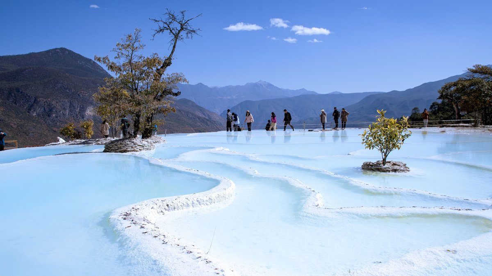

하늘빛이 고인 자리
중국 윈난성 백수대
리장에서 한참을 들어가야 하는 깊은 산속입니다. 여행사 상품으로는 잘 가지 않는 곳이라고 합니다. 딸과 둘이 자유여행으로 윈난성에 스무사흘을 머물며 구석구석을 돌아다니다 닿았습니다.
가서 보니 경이로웠습니다. 자연이 저 혼자 만들어 낸 것인데 사람이 깎은 것보다 고왔습니다. 하얀 선이 층층이 이어진 자리에 파란 물빛이 비치니 그대로 예술이었습니다.
어느 한 곳을 봐 달라고 말씀드리지는 않겠습니다. 전체를 그대로 보아 주시면 좋겠습니다.